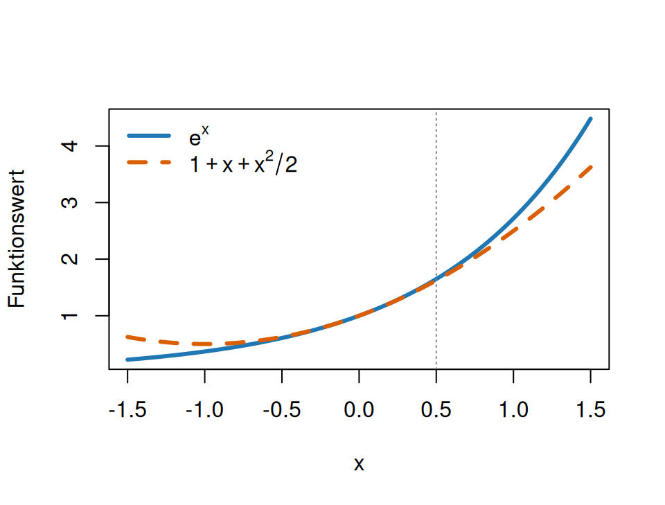
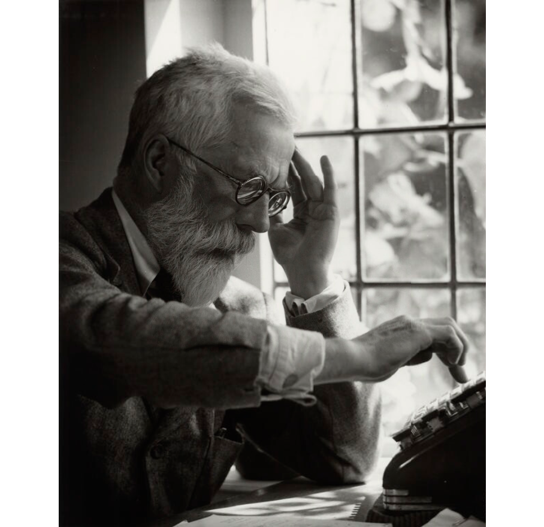

Fortgeschrittene mathematische Methoden in der Statistik
fabian.scheipl@lmu.de)\[ \definecolor{fmmgreen}{RGB}{0,158,115} \definecolor{fmmblue}{RGB}{0,114,178} \definecolor{fmmred}{RGB}{213,94,0} \definecolor{fmmorange}{RGB}{230,159,0} \definecolor{fmmpurple}{RGB}{158,87,213} \newcommand{\ind}{\unicode{x1D7D9}} \newcommand{\R}{{\mathbb{R}}} \newcommand{\N}{{\mathbb{N}}} \newcommand{\Q}{{\mathbb{Q}}} \newcommand{\C}{\mathbb{C}} \newcommand{\P}{\mathbb{P}} \newcommand{\Z}{{\mathbb{Z}}} \newcommand{\E}{{\mathbb{E}}} \newcommand{\K}{{\mathbb{K}}} \newcommand{\L}{\mathbb{L}} \newcommand{\F}{{\mathbb{F}}} \newcommand{\G}{\mathbb{G}} \newcommand{\S}{\mathbb{S}} \newcommand{\D}{{\mathbb{D}}} \newcommand{\bnull}{{\boldsymbol{0}}} \newcommand{\bzero}{{\boldsymbol{0}}} \newcommand{\ba}{{\boldsymbol{a}}} \newcommand{\bb}{{\boldsymbol{b}}} \newcommand{\bc}{{\boldsymbol{c}}} \newcommand{\bd}{{\boldsymbol{d}}} \newcommand{\be}{{\boldsymbol{e}}} \newcommand{\bg}{{\boldsymbol{g}}} \newcommand{\bh}{{\boldsymbol{h}}} \newcommand{\bi}{{\boldsymbol{i}}} \newcommand{\bj}{{\boldsymbol{j}}} \newcommand{\bk}{{\boldsymbol{k}}} \newcommand{\bl}{{\boldsymbol{l}}} \newcommand{\bn}{{\boldsymbol{n}}} \newcommand{\bo}{{\boldsymbol{o}}} \newcommand{\bp}{{\boldsymbol{p}}} \newcommand{\bq}{{\boldsymbol{q}}} \newcommand{\br}{{\boldsymbol{r}}} \newcommand{\bs}{{\boldsymbol{s}}} \newcommand{\bt}{{\boldsymbol{t}}} \newcommand{\bu}{{\boldsymbol{u}}} \newcommand{\bv}{{\boldsymbol{v}}} \newcommand{\bw}{{\boldsymbol{w}}} \newcommand{\bx}{{\boldsymbol{x}}} \newcommand{\by}{{\boldsymbol{y}}} \newcommand{\bz}{{\boldsymbol{z}}} \newcommand{\bA}{{\boldsymbol{A}}} \newcommand{\bB}{{\boldsymbol{B}}} \newcommand{\bC}{{\boldsymbol{C}}} \newcommand{\bD}{{\boldsymbol{D}}} \newcommand{\bE}{{\boldsymbol{E}}} \newcommand{\bF}{{\boldsymbol{F}}} \newcommand{\bG}{{\boldsymbol{G}}} \newcommand{\bH}{{\boldsymbol{H}}} \newcommand{\bI}{{\boldsymbol{I}}} \newcommand{\bJ}{{\boldsymbol{J}}} \newcommand{\bK}{{\boldsymbol{K}}} \newcommand{\bL}{{\boldsymbol{L}}} \newcommand{\bM}{{\boldsymbol{M}}} \newcommand{\bN}{{\boldsymbol{N}}} \newcommand{\bO}{{\boldsymbol{O}}} \newcommand{\bP}{{\boldsymbol{P}}} \newcommand{\bQ}{{\boldsymbol{Q}}} \newcommand{\bR}{{\boldsymbol{R}}} \newcommand{\bS}{{\boldsymbol{S}}} \newcommand{\bT}{{\boldsymbol{T}}} \newcommand{\bU}{{\boldsymbol{U}}} \newcommand{\bV}{{\boldsymbol{V}}} \newcommand{\bW}{{\boldsymbol{W}}} \newcommand{\bX}{{\boldsymbol{X}}} \newcommand{\bY}{{\boldsymbol{Y}}} \newcommand{\bZ}{{\boldsymbol{Z}}} \newcommand{\tagqed}{\tag*{$\blacksquare$}} \newcommand{\Acal}{{\mathcal{A}}} \newcommand{\Bcal}{{\mathcal{B}}} \newcommand{\Ccal}{{\mathcal{C}}} \newcommand{\Dcal}{{\mathcal{D}}} \newcommand{\Ecal}{{\mathcal{E}}} \newcommand{\Fcal}{{\mathcal{F}}} \newcommand{\Gcal}{{\mathcal{G}}} \newcommand{\Hcal}{{\mathcal{H}}} \newcommand{\Ical}{{\mathcal{I}}} \newcommand{\Jcal}{{\mathcal{J}}} \newcommand{\Kcal}{{\mathcal{K}}} \newcommand{\Lcal}{{\mathcal{L}}} \newcommand{\Mcal}{{\mathcal{M}}} \newcommand{\Ncal}{{\mathcal{N}}} \newcommand{\Ocal}{{\mathcal{O}}} \newcommand{\Pcal}{{\mathcal{P}}} \newcommand{\Qcal}{{\mathcal{Q}}} \newcommand{\Rcal}{{\mathcal{R}}} \newcommand{\Scal}{{\mathcal{S}}} \newcommand{\Tcal}{{\mathcal{T}}} \newcommand{\Ucal}{{\mathcal{U}}} \newcommand{\Vcal}{{\mathcal{V}}} \newcommand{\Wcal}{{\mathcal{W}}} \newcommand{\Xcal}{{\mathcal{X}}} \newcommand{\Ycal}{{\mathcal{Y}}} \newcommand{\Zcal}{{\mathcal{Z}}} \newcommand{\eps}{{\varepsilon}} \newcommand{\beps}{{\boldsymbol{\epsilon}}} \newcommand{\balpha}{{\boldsymbol{\alpha}}} \newcommand{\bbeta}{{\boldsymbol{\beta}}} \newcommand{\bchi}{{\boldsymbol{\chi}}} \newcommand{\bdelta}{{\boldsymbol{\delta}}} \newcommand{\bDelta}{{\boldsymbol{\Delta}}} \newcommand{\bepsilon}{{\boldsymbol{\epsilon}}} \newcommand{\bphi}{{\boldsymbol{\phi}}} \newcommand{\bgamma}{{\boldsymbol{\gamma}}} \newcommand{\betah}{{\boldsymbol{\eta}}} \newcommand{\btheta}{{\boldsymbol{\theta}}} \newcommand{\biota}{{\boldsymbol{\iota}}} \newcommand{\bkappa}{{\boldsymbol{\kappa}}} \newcommand{\blambda}{{\boldsymbol{\lambda}}} \newcommand{\bLambda}{{\boldsymbol{\Lambda}}} \newcommand{\bmu}{{\boldsymbol{\mu}}} \newcommand{\bnu}{{\boldsymbol{\nu}}} \newcommand{\bomikron}{{\boldsymbol{\omicron}}} \newcommand{\bpi}{{\boldsymbol{\pi}}} \newcommand{\bSigma}{{\boldsymbol{\Sigma}}} \newcommand{\bxi}{{\boldsymbol{\xi}}} \newcommand{\bzeta}{{\boldsymbol{\zeta}}} \newcommand{\bomega}{{\boldsymbol{\omega}}} \newcommand{\equivto}{{\Leftrightarrow}} \newcommand{\quequiv}{{\quad \equivto \quad}} \newcommand{\impl}{{\implies}} \newcommand{\quimpl}{{\quad \implies \quad}} \newcommand{\implby}{{\impliedby}} \newcommand{\notimplies}{\not\implies} \newcommand{\tr}{{\operatorname{tr}}} \newcommand{\spann}{{\operatorname{span}}} \newcommand{\col}{{\operatorname{col}}} \newcommand{\rang}{{\operatorname{rang}}} \newcommand{\diag}{{\operatorname{diag}}} \newcommand{\vec}{\operatorname{vec}} \newcommand{\pinv}{{^{+}}} \newcommand{\kron}{\mathbin{\otimes_{\mathrm{K}}}} \newcommand{\sign}{{\operatorname{sign}}} \newcommand{\la}{{\langle}} \newcommand{\ra}{{\rangle}} \newcommand{\inner}[1]{{\langle #1 \rangle}} \newcommand{\proj}{{\operatorname{proj}}} \newcommand{\bar}{\overline} \newcommand{\vol}{{\operatorname{vol}}} \newcommand{\dx}{{\, \mathrm{d}x}} \newcommand{\ol}{{\overline}} \newcommand{\argmax}{\mathop{\mathrm{arg\,max}}} \newcommand{\argmin}{\mathop{\mathrm{arg\,min}}} \newcommand{\conv}{\mathop{\mathrm{conv}}} \newcommand{\epi}{\mathop{\mathrm{epi}}} \newcommand{\interior}{\mathop{\mathrm{int}}} \newcommand{\Pr}{\mathbb{P}} \newcommand{\var}{{\mathbb{V}\mathrm{ar}}} \newcommand{\bias}{{\operatorname{bias}}} \newcommand{\abias}{{\mathrm{ABias}}} \newcommand{\AMSE}{{\mathrm{AMSE}}} \newcommand{\AMISE}{{\mathrm{AMISE}}} \newcommand{\cov}{{\mathbb{C}\mathrm{ov}}} \newcommand{\corr}{{\mathrm{Corr}}} \newcommand{\ov}{{\overline}} \newcommand{\wh}[1]{{\widehat{#1}}} \newcommand{\wt}[1]{{\widetilde{#1}}} \newcommand{\tod}{{\stackrel{d}{\to}}} \newcommand{\sumin}{{\sum_{i = 1}^n}} \newcommand{\sumjn}{{\sum_{j = 1}^n}} \newcommand{\KL}{{\operatorname{KL}}} \newcommand{\softmax}{{\operatorname{SoftMax}}} \newcommand{\layernorm}{{\operatorname{LayerNorm}}} \newcommand{\avg}{{\operatorname{avg}}} \newcommand{\relu}{{\operatorname{ReLu}}} \newcommand{\VC}{{\operatorname{VC}}} \newcommand{\indep}{{\perp \!\!\! \perp}} \newcommand{\unif}{{\operatorname{Unif}}} \newcommand{\bern}{{\operatorname{Bernoulli}}} \newcommand{\binomial}{{\operatorname{Binomial}}} \newcommand{\MSE}{{\operatorname{MSE}}} \newcommand{\iid}{\textit{iid}\;} \newcommand{\IF}{{\operatorname{IF} }} \newcommand{\BIC}{{\operatorname{BIC}}} \newcommand{\AIC}{{\operatorname{AIC}}} \newcommand{\IC}{{\operatorname{IC}}} \newcommand{\expl}[1]{{\tag*{[#1]}}} \newcommand{\cb}[1]{\textbf{#1}} \newcommand{\cbgreen}[1]{\textcolor{fmmgreen}{\textbf{#1}}} \newcommand{\cbred}[1]{\textcolor{fmmred}{\textbf{#1}}} \newcommand{\cbpurp}[1]{\textcolor{fmmpurple}{\textbf{#1}}} \newcommand{\cborange}[1]{\textcolor{fmmorange}{\textbf{#1}}} \newcommand{\corange}[1]{{\textcolor{fmmorange}{#1}}} \newcommand{\cblue}[1]{{\textcolor{fmmblue}{#1}}} \newcommand{\cgreen}[1]{{\textcolor{fmmgreen}{#1}}} \newcommand{\cred}[1]{{\textcolor{fmmred}{#1}}} \newcommand{\cpurp}[1]{{\textcolor{fmmpurple}{#1}}} \newcommand{\symbf}[1]{\boldsymbol{#1}} \]
Personen:
Zeiten & Räume:
| VL | Do 10:15-12:00 | Hgb. – A 214 |
| Übung 1 | Di 14:15-15:45 | Prof.-Huber-Pl. 2 – W 201 |
| Übung 2 | Mi 12:15-13:45 | Hgb. - M 114 |
Termine WS 26/27: wöchentlich Do, 15.10.2026 – 4.2.2027 (Weihnachtspause: letzte VL 17.12.2026, weiter am 7.1.2027)
Statistik früher

Statistik heute
In der Praxis ist Statistik / ML immer computational.
In diesem Kurs lernen wir mathematische Konzepte, die bei der praktischen Lösung von Problemen helfen.
Diese Konzepte werden benötigt, um Computeralgorithmen zu entwickeln, verstehen und analysieren.
\(\implies\) fortgeschrittene (numerische) Lineare Algebra
\(\implies\) fortgeschrittene Analysis
Aufgabe: Trainiere ein lineares Modell \(y_i \approx \beta_1 x_{i1} + \dots + \beta_p x_{ip}\) mit \(p = 10.000\) Features auf \(n = 100.000\) Beobachtungen.
\(\implies\) Kleinste-Quadrate-Problem:
\[\min_{\bbeta \in \R^p}\left(\sum^n_{i=1} \left( y_i - \sum^p_{j=1} x_{ij}\beta_j\right)^2\right) = \min_{\bbeta \in \R^p} \|\bX\bbeta - \by\|_2^2\]
Naive Lösung (falls \(\rang(\bX) = p\)): \(\wh{\bbeta} = (\bX^\top\bX)^{-1}\bX^\top\by\)
Probleme in der Praxis:
Kondition: \(\bX^\top\bX\) kann sehr schlecht “konditioniert” sein \(\implies\) numerische Instabilität, große Fehler
Komplexität: Matrixinversion kostet \(O(p^3)\) Operationen \(\implies\) für \(p = 10.000\): ca. \(10^{12}\) FLOPs!
Speicher: \(\bX^\top\bX\) ist \(p \times p\) Matrix \(\implies\) für \(p = 10.000\): ca. 800 MB nur für diese Matrix
Bessere Lösungen: QR-Zerlegung, SVD, iterative Verfahren \(\to\) dieser Kurs
Betrachte das lineare Gleichungssystem \(\bA\bx = \bb\) mit \[\bA = \begin{pmatrix} 1 & 1 \\ 1 & 1.0001 \end{pmatrix}, \quad \bb = \begin{pmatrix} 2 \\ 2.0001 \end{pmatrix}\]
Exakte Lösung: \(\bx = \begin{pmatrix} 1 \\ 1 \end{pmatrix}\)
Gestörtes Problem (z.B. durch Rundungsfehler): \(\bA\bx = \tilde{\bb}\) mit \[\tilde{\bb} = \begin{pmatrix} 2 \\ 2.0002 \end{pmatrix} \quad \text{(nur 0.005\% Fehler!)}\]
Lösung des gestörten Problems: \(\tilde{\bx} = \begin{pmatrix} 0 \\ 2 \end{pmatrix}\)
\(\implies\) 100% Fehler in \(x_1\) durch 0.005% Fehler in den Daten!
\(\implies\) Das Problem ist (furchtbar) schlecht konditioniert.
Matrixmultiplikation \(\bC = \bA\bB\) für \(n \times n\) Matrizen:
| Algorithmus | Rechenops. für \(n = 1000\) | Komplexität |
|---|---|---|
| Naive Methode | \(\approx 10^9\) Ops | \(O(n^3)\) |
| Strassen | \(\approx 6 \times 10^8\) Ops | \(O(n^{2.807})\) |
| Optimiert | \(\approx 2 \times 10^8\) Ops | \(O(n^{2.373})\) |
Für \(n = 10.000\):
\(\implies\) Faktor 50 schneller durch besseren Algorithmus (…potentiell)!
Beispiel AI: Gradient Descent für neuronale Netze
Verlustfunktion: \(L : \R^{p \times K} \to \R\) (Matrix-Argument \(\bW\)!)
Zum Beispiel: MSE \[L(\bW) = \frac{1}{2}\|\bX\bW - \bY\|_F^2\] mit \(\bX \in \R^{N \times p}\), \(\bW \in \R^{p \times K}\), \(\bY \in \R^{N \times K}\)
Frage: Wie berechnen wir \(\frac{\partial L}{\partial \bW}\)?
Naive Methode: Berechne \(\frac{\partial L}{\partial W_{ij}}\) für alle \(i,j\) einzeln
\(\implies\) \(p \times K\) Ableitungen!
Für \(p = 1000, K = 10\): 10.000 Ableitungen!
Bessere Methode: Matrix-Kalkül \[\frac{\partial L}{\partial \bW} = \bX^\top(\bX\bW - \bY)\]
Eine Zeile statt 10.000! Und: effizient implementierbar.
\(\implies\) Ableitungen von Matrix/Tensor-Funktionen essentiell für Deep Learning, Optimierung, etc.
Ziel: Approximiere komplizierte Funktion \(f(x)\) durch ein Polynom in der Nähe von \(x_0\)
Taylor-Approximation 2. Ordnung: \[f(x) \approx f(x_0) + f'(x_0)(x-x_0) + \frac{f''(x_0)}{2}(x-x_0)^2\]
Konkretes Beispiel: \(f(x) = e^x\) um \(x_0 = 0\) \[f(0) = f'(0) = f''(0) = 1 \implies e^x \approx 1 + x + \frac{x^2}{2}\]
Fehler für \(x = 0.5\):

Typisches Problem: Training eines neuronalen Netzes
\[\min_{\btheta \in \R^d} L(\btheta), \qquad L(\btheta) = \frac{1}{N}\sum_{i=1}^N \ell(f(\bx_i; \btheta), y_i)\]
| Modell | Parameter \(d\) | Daten \(N\) |
|---|---|---|
| Logistische Regression (MNIST, 10 Klassen) | \(\sim 8 \times 10^3\) | \(6 \times 10^4\) |
| ResNet-50 | \(\sim 2.5 \times 10^7\) | \(> 10^6\) |
| GPT-3 | \(\sim 1.75 \times 10^{11}\) | \(\sim 3 \times 10^{11}\) Tokens |
Herausforderungen:
\(\implies\) Brauchen smarte Algorithmen: Stochastic Gradient Descent, Momentum, etc.
Empfehlung:
Lineare Algebra - Sie sollten wissen:
Analysis - Sie sollten wissen: